Gratis de verdad
Usa claves gratuitas de proveedores como Google Gemini, Mistral o Groq. No hace falta pagar ChatGPT Plus ni Claude Pro.
Pon tus propias claves gratuitas y StudyLLM va alternando entre ellas para que no te quedes bloqueado. Suelta tus apuntes y lecturas, ajusta cómo se comporta la IA, añade herramientas de investigación y aprende cómo funciona todo con un curso dentro de la propia app.
Sin tarjeta, sin cuenta con StudyLLM. Tus chats se quedan en tu ordenador.
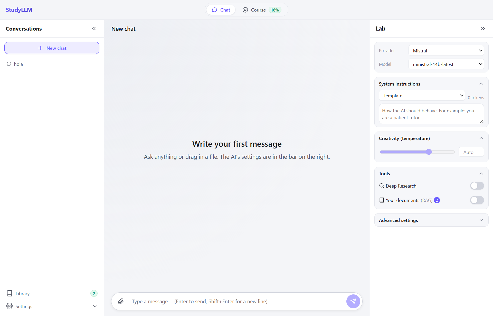
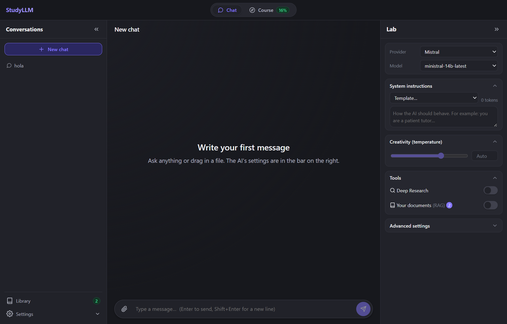
Herramientas sencillas para leer, escribir, investigar y repasar.
Usa claves gratuitas de proveedores como Google Gemini, Mistral o Groq. No hace falta pagar ChatGPT Plus ni Claude Pro.
Pon más de una clave y la app cambia sola en cuanto una se queda sin cupo.
Una barra lateral siempre a mano: elige proveedor y modelo, dale instrucciones a la IA y ajusta su creatividad.
Arrastra un PDF, un documento de Word o tus apuntes al chat y la IA los lee.
Añade herramientas sin clave para leer enlaces, buscar en Wikipedia o consultar literatura académica.
Exporta cualquier conversación a Markdown, Word o PDF, o guárdala en un Google Doc.
Deja que la IA trabaje con Gmail, Calendar, Tasks, Drive, Docs y Sheets. Tú decides, herramienta a herramienta, qué se permite.
Las claves se guardan en el llavero seguro de tu sistema. Los chats van directos de tu ordenador al proveedor de IA, sin ningún servidor de StudyLLM en medio.
Instaladores nativos para Windows, macOS y Linux. Sin pestañas de navegador ni cuentas nuevas.
Once módulos interactivos que explican cómo funciona la IA, con ejercicios en la propia app y progreso guardado.
¿Sin ganas de gestionar claves? StudyLLM descarga y arranca un enrutador local que las administra por ti.
Un interruptor y la IA busca, lee varias fuentes y responde con calma, mostrando cada paso.
Genera preguntas de test o de respuesta corta a partir de tus documentos, con corrección inmediata, repaso de los fallos e historial de intentos.
Escribe en el cuadro de la barra lateral y salta directo al mensaje, aunque no recuerdes las palabras exactas ni los acentos.
La app comprueba si hay una versión nueva, verifica la firma de la descarga, se instala y se reinicia con un clic.
Leer, escribir, investigar y repasar, con tus propias fuentes y no con un chat en blanco.
Arrastra un PDF, un documento de Word o tus apuntes al chat. StudyLLM saca el texto para que la IA lo resuma, responda preguntas o te señale las fechas y los nombres clave, sin copiar y pegar párrafos enteros.
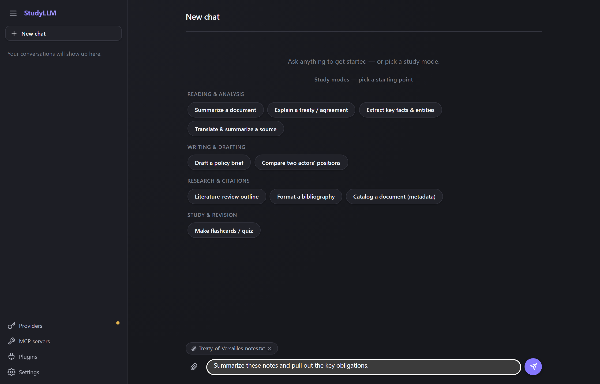
Añade herramientas listas para usar en un par de clics: leer cualquier enlace, buscar en la web, ver transcripciones de YouTube, consultar Wikipedia o literatura académica, e incluso conectar Obsidian o Zotero. Los resultados se ordenan por confianza y popularidad, cada herramienta muestra un distintivo claro y la mayoría no necesita cuenta ni clave.
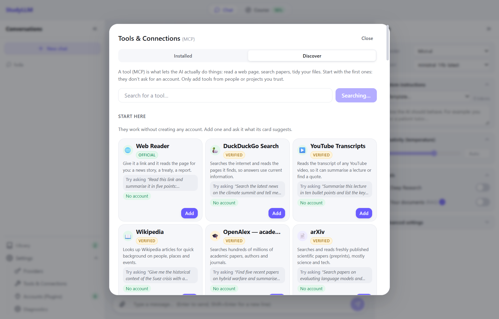
Conecta Google una vez y la IA puede ayudarte con tu Gmail, Calendar, Tasks, Drive, Docs y Sheets, también para crear carpetas y archivos en Drive. Inicias sesión directamente con Google — StudyLLM nunca ve tu contraseña — y para cada herramienta eliges si se ejecuta sola, pregunta antes o se desactiva.
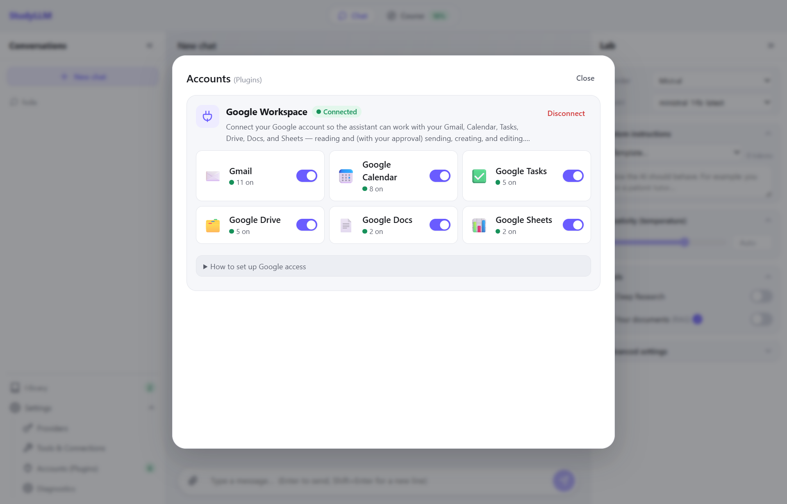
Activa «Tus documentos» en el Laboratorio y la IA responde usando solo tu biblioteca. Cada respuesta empieza mostrando los pasajes que se usaron y cuánto se parecen a tu pregunta, y cita de cuál sale cada dato.
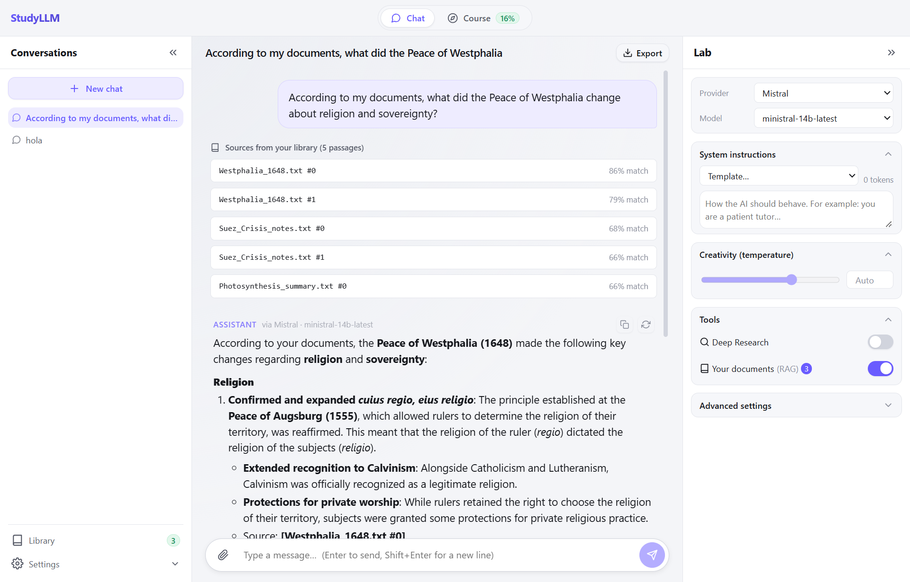
Cada documento se corta en pasajes y se convierte en una huella numérica. Ábrelos para ver su «huella» o mira el mapa de tu biblioteca: los temas parecidos quedan juntos y los distintos, lejos.
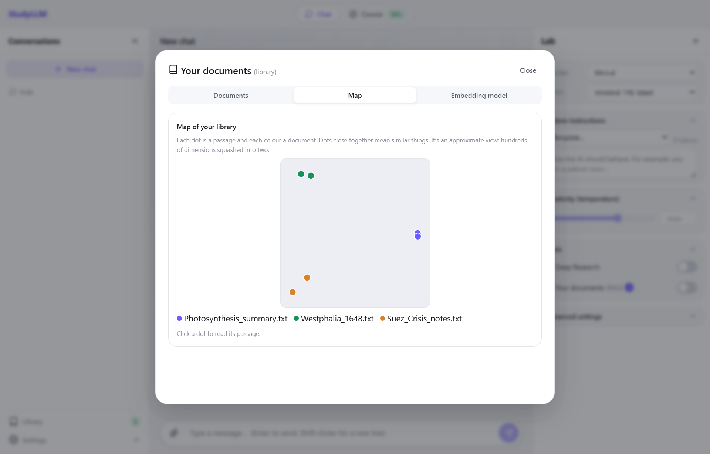
El curso integrado tiene once módulos con capturas anotadas y tarjetas de tarea que son el propio ejercicio: chats incrustados, formularios de configuración, calculadoras y pequeños cuestionarios.
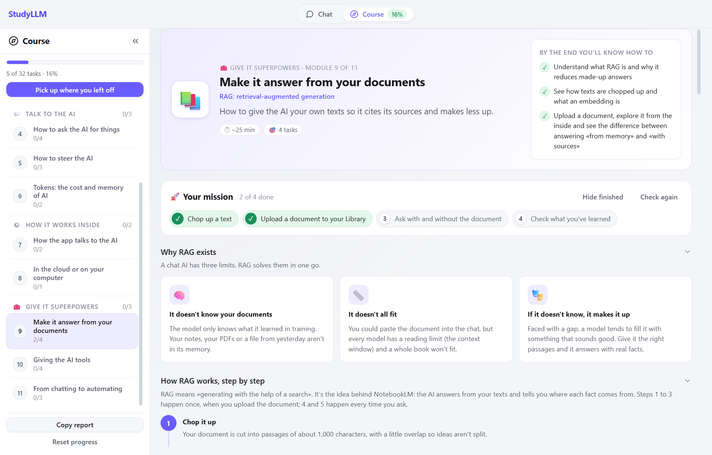
«Chatear con tus documentos» no es una caja negra. Abre el explorador, escribe una pregunta y observa, paso a paso, cómo la IA encuentra y puntúa los pasajes correctos de tu biblioteca.
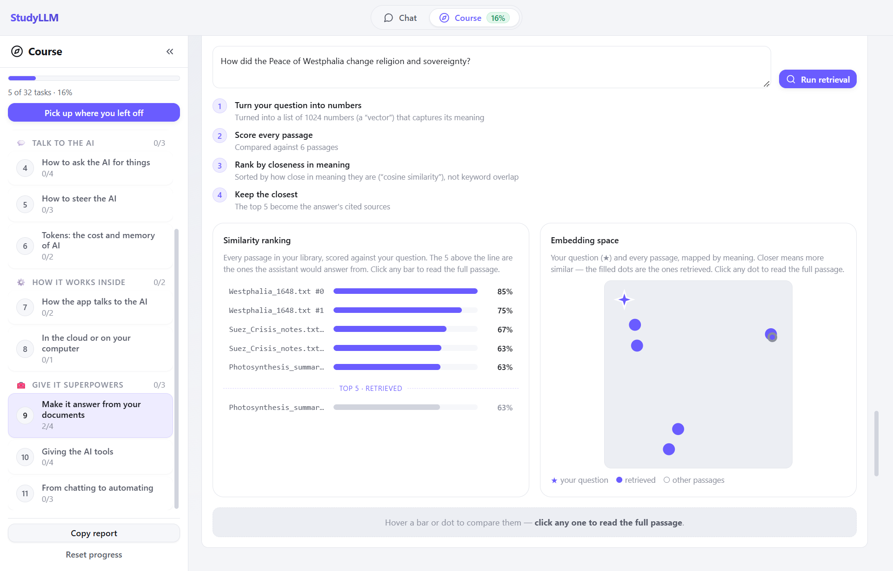
Convierte tu pregunta en un vector, la compara con cada pasaje y se queda con los más cercanos, con los números reales de tu propia biblioteca.
Cada pasaje puntuado y ordenado, con una línea que marca los que la IA usará de verdad para responder.
Tu pregunta y tus pasajes situados por significado: más cerca es más parecido. Pasa el ratón por un pasaje para leer su texto y su puntuación exacta.
Listo en menos de un minuto, y luego a darle trabajo de verdad a la IA.
Descarga el instalador para tu sistema (más abajo) y ábrelo como cualquier otra app.
En Proveedores, elige un plan gratuito recomendado y pega tu clave. Cada proveedor enlaza a su página de claves.
Escribe, arrastra un PDF o activa «Tus documentos». Con un segundo proveedor, la app cambia sola si uno se agota.
Da acceso a una carpeta o busca más herramientas en el catálogo. Tú decides cuáles se ejecutan solas.
Abre Proveedores, elige un plan gratuito recomendado como Google Gemini o Mistral y pega una clave: estás chateando en segundos, sin tarjeta y sin cuenta con StudyLLM. Añade un segundo o tercer proveedor y la app alterna entre ellos sola. ¿Prefieres no gestionar claves? Cambia a OmniRoute y un enrutador local se encarga por ti.
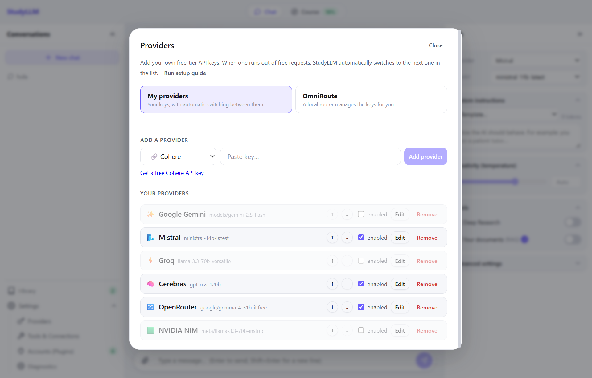
Activa el acceso a una carpeta o busca más herramientas en el catálogo. Cada llamada a una herramienta se ve claramente en la conversación, y tú decides por herramienta si se ejecuta sola, pregunta antes o se bloquea.
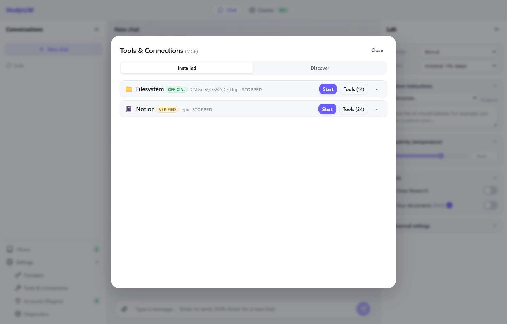
Elige tu sistema. Los instaladores están en la última versión de GitHub Releases.
.exe)..dmg que corresponda a tu Mac (aarch64 = Apple Silicon, x64 = Intel).xattr -cr /Applications/StudyLLM.app
.AppImage o el .deb.chmod +x StudyLLM*.AppImage ./StudyLLM*.AppImage
.deb y abre StudyLLM desde tu menú de aplicaciones.
sudo apt install ./StudyLLM*.deb
StudyLLM se actualiza solo: comprueba GitHub al abrir y puedes actualizar en Ajustes → Actualizaciones de la app.
Está hecho con Tauri, React y Rust. Las instrucciones están en el README.